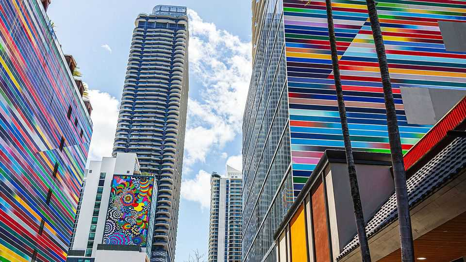
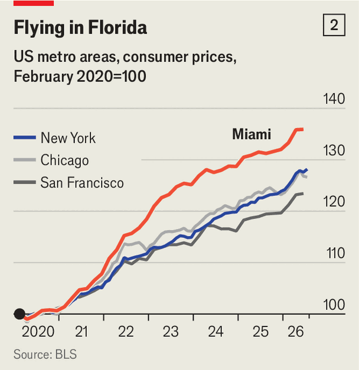
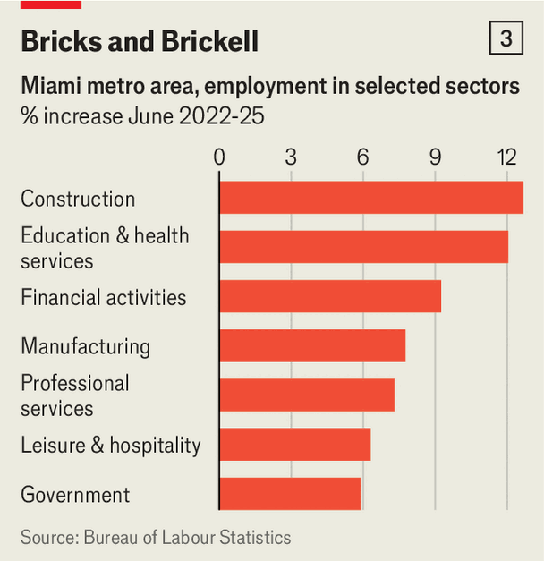

The extraordinary rise of Miami’s economy
Thanks to a combination of capital and politics, the city is booming. Can its success be sustained?

Sep 3rd 2026
ON A FRIDAY night in Miami, a luxury-property agent emerges from a swanky lounge and stands outside a skyscraper. He is celebrating the sale of a house—for $50m. He will not name his buyer but says he mostly sells to tech and finance moguls. As for the skyscraper, 830 Brickell, its bottom few feet are a little shabby, yet it contains some of America’s priciest square metres of office space. It is home to Citadel, a big hedge fund; an investment firm owned by the family office of Peter Thiel, a tech billionaire; and two top law firms.

The estate agent and 830 Brickell are reflections of Miami’s rise. Between 2020 and 2024 (the latest available year) the metro area’s GDP grew by 23%, against 13% in America overall (see chart 1). The rich are moving in. New residents include Ken Griffin, Citadel’s chief, Jeff Bezos, the founder of Amazon and Blue Origin, a space firm that makes and launches its rockets in Florida, and Mark Zuckerberg, head of Meta. The fuel is political as well as financial: Donald Trump spends more time nearby than anywhere but Washington, DC, mostly at his Mar-a-Lago estate. Palm Beach is a hub for policymakers and diplomats.
“Fifteen years ago,” the estate agent says, “the only people who thought it was smart to be rich here were Cubans, DJs and golfers.” He exaggerates: Miami has long been a regional hub. But its economy did rely on its proximity to Latin America, and a sometimes lurid entertainment industry. Central Miami’s economy was roughly a quarter of the size of Manhattan’s.
The ratio is now a half, and rising. In 2020 no house in Miami fetched $50m. In 2025, 17 did, almost half the national total. Many of the billionaires and firms making the move insist they did so because they believe the city’s economy will soon be among America’s biggest, rivalling New York, Chicago and San Francisco. Whether Miami’s boom can be sustained is debatable. But for now it is thriving on a heady mix of financial and political power.
Over the past five years three waves of activity have broken on the south Florida shore. One brought foreign money. Francis Suarez, Miami’s Republican mayor until 2025, travelled the world courting investors, with notable success in the Persian Gulf. Hotels are crammed with the region’s hedge-fund managers, traders and consultants. Some have moved for good since the start of Mr Trump’s war on Iran. Saudi Arabia has opened an office; Gulf governments have invested in businesses from hotels to crypto exchanges. In addition, yet more Latin American investors have arrived since a few right-wing governments in that region loosened capital controls.
A bigger wave has come from within America: people and businesses fed up with high taxes and left-wing policies in other cities. Florida’s state income tax is zero; New York City’s richest pay 14.8%. Property levies on the priciest homes are under 1%. Wealthy Americans have long visited Florida for recreation, be it 24-hour nightclubs or plush retirement homes. But lately many have settled. People with combined annual earnings of around $40bn moved there in 2025, according to data from the Internal Revenue Service.
For companies, various levels of government in Florida offer tax breaks and incentives, such as relief to firms paying employees above the state’s average wage. Miami’s officials are determinedly business-friendly. When Mr Griffin began to complain about crime and taxes in Chicago, where Citadel was previously based, Mr Suarez rang to suggest a move south. At least 150 financial firms have migrated, including the private-wealth business of Wells Fargo, a giant bank, and Citadel’s fellow investment firms, such as Elliott Management. Tech is also well represented. Palantir, a controversial AI-analytics firm with lots of government contracts, moved from left-leaning Denver in 2026. Arrivals from San Francisco include three firms belonging to Mr Thiel.
The third wave has been led by south Florida’s most famous rich immigrant. Mr Trump has turned the area into a political nerve centre. Between October and March he spent a quarter of his time there. Several Floridians are members of his inner circle, including Susie Wiles, his chief of staff; Todd Blanche, the attorney-general; and Marco Rubio, the secretary of state. An employee of Ms Wiles says he spent lots of time at Mar-a-Lago in his first term, “but we’re making a lot more of the real decisions from Florida this time around.”
At Mar-a-Lago Mr Trump has hosted foreign leaders, and decided to blockade Cuba’s oil supplies and to capture Nicolás Maduro, Venezuela’s dictator. His staff met CEOs there before the federal budget in the spring and health-care providers before the president amended Medicare (a scheme for the elderly) in July. “Look,” says one official, “in the president’s view, a lot of the smartest people in the country are already members at Mar-a-Lago.”
As political activity has headed south, money has followed. Ballard Partners, America’s biggest lobbying firm (founded in Florida), now has its largest office in Palm Beach. Many foreign governments have sent in extra civil servants. “Our border guard and defence ministry”, says one consul-general, “need to be able to reach Palm Beach.” Officials from three European countries say their consulates have more staff in Miami than in New York.

No surprise, then, that the property business is booming. In 2025 it accounted for 18% of Miami’s economy, up from 14% in 2014. The number of construction jobs has risen by 12% since the pandemic (see chart 2). Mr Griffin is spending roughly $2bn on a new 54-storey skyscraper.
Finance is doing well, too: survey data indicate that, thanks to all the Wall Street migrants, back-office jobs have grown by 20% since 2019. The share of corporate services, such as law and consulting, in local GDP has risen by two percentage points.
Hospitality, the old mainstay, is also thriving. It employs a tenth of metropolitan Miami’s workforce, one of the highest shares in the country. Miami is the only city with a team in all four of America’s big sports, a top-class motor race and a leading tennis tournament, the Miami Open. Of Mr Trump’s four speeches at business conferences in 2025, he gave two in Miami. “We’ve always been spectacular,” says an entertainment agent at Faena, a luxury hotel, “but the new guys give us exclusivity.”
Will Miami’s boom give way to a steady, sustainable expansion, or just give way? Successful cities thrive on network effects: whether in finance, tech or lobbying, firms are drawn to places where they are confident of finding customers and skilled workers; people head to where they can find the jobs they want. To make the leap Miami must overcome three obstacles.

One is a potential lack of people who are not especially rich. The influx of wealth has pushed the local cost of living to dizzying heights. According to the Bureau of Economic Analysis, a government agency, residential rents are above the national average and higher even than in New York. Consumer prices have risen by nearly 40% since early 2020, against 28% in America as a whole (see chart 3). As luxury food outlets have multiplied, cheaper shops have been pushed out. High costs are driving the poorest away. Since 2014 the number of millionaires has nearly doubled; but between July 2024 and July 2025 Miami’s population has shrunk by 10,000. Poor neighbourhoods, whose residents staff the hospitality industry, are emptying fastest.
Another hurdle is a lack of brainpower. New York, Seattle and San Francisco are knowledge economies, attracting hordes of skilled people and the capital to harness them. Yet despite the recent influx of smarts and money, Miami is far from matching its rivals. Firms and universities in Florida, which has the fourth-biggest economy among America’s states, spent just $13bn on research in 2023, less than any other in the top ten. Florida has fewer graduates, relative to population, than the national average. Most capital deployed by Miami’s newly flush venture capitalists still goes to startups in San Francisco.
Mr Griffin promises that, by 2031, many more of his employees will be working from Miami. So far 400 of them do, though most are not advising on investments. If back-office roles are stripped out, finance makes up no more of Miami’s economy than it did a decade ago. The city’s financial sector, the biggest of its white-collar industries, is a mere one-eighth of the size of New York’s.
A third problem is the climate. South Florida, on a peninsula near sea level, is prone to extreme weather. A meteorologist at AccuWeather, a forecasting company, has said that no American city is more likely to be damaged by hurricanes. In August yet another academic paper, in Scientific Reports, predicted that if global temperatures exceed 1.5°C above pre-industrial levels, storms will flood Miami regularly. Florida is already the costliest state in which to buy insurance for mortgaged homes.
Yet there is no doubting Miami’s momentum. A bullish local politician believes that, like the Gulf before the Iran war, it can be where the rest of the world comes to pursue business and store wealth. A year ago Mr Trump hosted a dinner for 33 of America’s leading business figures at Mar-a-Lago. At least half of those attending (including Mr Trump and Ms Wiles, and their spouses) had property in Florida. In 2029 Mr Trump’s term will be up and Florida’s political pull may start to fade. Maybe the city can thrive by continuing to attract the rich. But maybe it needs more.■